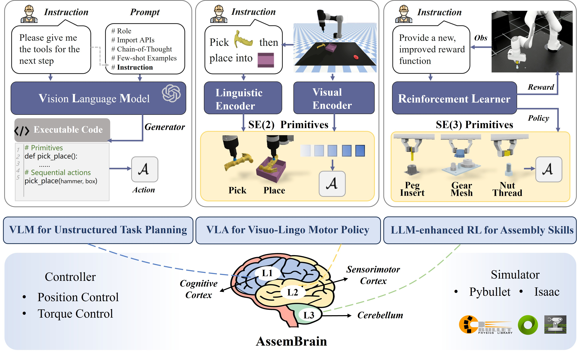

.jpg)
About Me
I am a Postdoctoral Fellow at The Hong Kong Polytechnic University, where I have been working since August 2026.
I received my Ph.D. in Mechanical Engineering from Shanghai Jiao Tong University in 2026, supervised by Jin Qi and Jie Hu. During my Ph.D., I participated in the Joint PhD Supervision Scheme at The Hong Kong Polytechnic University from August 2025 to May 2026, working with Pai Zheng. Before that, I received my B.Eng. in Mechanical Design, Manufacturing and Automation from the University of Electronic Science and Technology of China in 2021.
My research focuses on robot skill learning, embodied intelligence, and human–robot collaboration, with particular interests in imitation learning, mixed reality-assisted skill transfer, aerial manipulation, and intelligent manufacturing. My doctoral work explored robot assembly skill learning and transfer for human–robot collaboration.
News & Highlights
Selected milestones- Best Student Paper Award at CIRP CATS 2026, Hong Kong.
- National Scholarship for Doctoral Students (top 3%) and Shanghai Outstanding Graduate recognition.
- Best Presentation & Best Poster Awards at the 3rd Human-Centric Intelligent Manufacturing Conference, Beijing.
- Joined the Joint PhD Supervision Scheme at The Hong Kong Polytechnic University.
Publications
* Corresponding author · my name is in bold.
Journal Articles



H2R Bridge: Transferring vision-language models to few-shot intention meta-perception in human robot collaboration
Duidi Wu, Q Zhao, J Fan, J Qi, P Zheng, J Hu
Journal of Manufacturing Systems 80, 524–535 · 2025
Paper ↗
Computer vision-based intelligent elevator information system for efficient demand-based operation and optimization
Duidi Wu, S Wu, Q Zhao, S Zhang, J Qi, J Hu, B Lin
Journal of Building Engineering 81, 108126 · 2024
Paper ↗
Overview of deep learning based pedestrian attribute recognition and re-identification
Duidi Wu, H Huang, Q Zhao, S Zhang, J Qi, J Hu
Heliyon 8(12) · 2022
Paper ↗

Hybrid Consistency Policy: Decoupling Multi-Modal Diversity and Real-Time Efficiency in Robotic Manipulation
Q Zhao, Y Shen, X Zhai, Duidi Wu, J Qi, C Hao, J Hu, Q Yu
IEEE Robotics and Automation Letters · 2026
Paper ↗
A vision-language conditioned physics-aware imitation learning approach for bimanual robotic dexterous assembly
T Wang, B Gao, H Ma, G Zhang, Duidi Wu, P Zheng
CIRP Annals · 2026
Paper ↗

Cross-Domain Gesture Recognition via Wrist-Worn Sensing for Resource-Efficient IoT Applications
S Zhang, Y Ding, J Qi, C Hong, W Liu, Duidi Wu, Q Zhao, J Hu
IEEE Internet of Things Journal · 2025
Paper ↗
Fall-related gait pattern recognition based on surface electromyography using a hybrid neural network with transfer learning
S Zhang, J Qi, S Hao, Duidi Wu, Q Zhao, B Chen, J Hu
Biomedical Signal Processing and Control 98, 106771 · 2024
Paper ↗
Generalized cross-domain framework for gesture recognition via wrist-worn sensing
S Zhang, J Qi, Duidi Wu, Q Zhao, J Hu
IEEE Journal of Biomedical and Health Informatics 29(2), 996–1008 · 2024
Paper ↗
E-gtn: Advanced terrain sensing framework for enhancing intelligent decision making of excavators
Q Zhao, L Gao, Duidi Wu, X Meng, J Qi, J Hu
Applied Sciences 14(16), 6974 · 2024
Paper ↗
Real-time speed monitoring of elevator system based on low-cost IMU
S Zhang, C Hong, H Huang, Duidi Wu, Q Zhao, J Qi, J Hu, Y Peng
IEEE Sensors Journal 23(15), 17559–17571 · 2023
Paper ↗
Coordination optimization control of DC component and harmonics for grid-connected PV inverters
B Long, C Zhao, Duidi Wu, WT Fang, Y Lu, KT Chong
ISA Transactions 99, 432–444 · 2020
Paper ↗Conference Papers
.jpg)
Generative AI-Driven Pathways for Robot Skill Learning and Human-Guided Transfer for Smart Assembly
Duidi Wu, P Zheng, Q Zhao, J Qi, J Hu
Procedia CIRP 147, 85–90 · Best Student Paper Award, CIRP CATS · 2026
Paper ↗
Improving Intent Recognition with Multimodal Supervision for Human-Robot Interaction
Duidi Wu, J Qi, Q Zhao, S Zhang, J Hu
International Conference on Automation in Manufacturing, Transportation and Logistics · 2024
Paper ↗
RBF-NN based upper-bound adaptive learning sliding mode control for grid-connected converter
Duidi Wu, B Long, Y Cheng
IEEE International Conference on Mechatronics and Automation (ICMA) · 2020
Paper ↗
Data augmentation for continuous excavation trajectories based on DGAN
Q Zhao, Duidi Wu, S Zhang, J Qi, J Hu, GN Zhu
IEEE International Conference on Mechatronics and Automation (ICMA) · 2024
Paper ↗
DC component minimization of transformerless LCL-type grid-connected inverter with virtual capacitors
W Fang, Duidi Wu, LJ Huang, B Long, Y Chen
Chinese Control Conference (CCC), 6520–6524 · 2019
Paper ↗
PAAM: Phase-Aware Action Modulation for Force-Guided Policy Augmentation in Contact-Rich Manipulation
Y Shen, Q Zhao, J Li, Duidi Wu, J Hu, J Qi, C Hong, J Ma, R Du
IEEE International Conference on Mechatronics and Automation (ICMA) · 2026
Paper ↗
Lightweight Gated Residual Late Fusion for Frozen Vision Priors in Vision-Only Diffusion Policies
J Li, Q Zhao, Duidi Wu, Y Shen, X Xu, H Xiong, S Shi, J Li, J Qi, J Hu
IEEE International Conference on Mechatronics and Automation (ICMA) · 2026
Paper ↗
Fall-Related Gait Recognition Using Surface Electromyography with Transfer Learning
S Zhang, B Chen, Duidi Wu, Q Zhao, C Hong, J Qi, J Hu
China Automation Congress (CAC), 290–295 · 2024
Paper ↗
Deep learning-based abnormal elevator action detection system
Q Zhao, Y Chen, Duidi Wu, Q Fan, H Huang, S Zhang, J Oi, J Hu
China Automation Congress (CAC), 1629–1634 · 2023
Paper ↗Preprints

Towards Physical Intelligence in Contact-Rich Manufacturing: A Visual–Force–Pose Demonstration and Phase-Aware Learning Framework
Y Wang, R Zhang, MY Li, H Shi, J Wang, H Huang, Duidi Wu, H Fang, et al.
SSRN 7525395 · Preprint
Paper ↗Reviewer Service
I have served as a reviewer for the following journals:
CAS Tier 1
- Robotics and Computer-Integrated Manufacturing (RCIM)
- Information Fusion (Inf. Fusion)
- Artificial Intelligence Review (Artif. Intell. Rev.)
CAS Tier 2
- Neural Networks (Neural Netw.)
- IEEE Robotics and Automation Letters (RA-L)
- Robotics and Autonomous Systems (RAS)
Other Journals
- Journal of Intelligent & Robotic Systems (J. Intell. Robot. Syst.)
- Frontiers in Robotics and AI (Front. Robot. AI)
- Sustainable Futures (Sustain. Futures)
- Research in Engineering Design (Res. Eng. Des.)
- Cognitive Computation (Cogn. Comput.)
- Scientific Reports (Sci. Rep.)